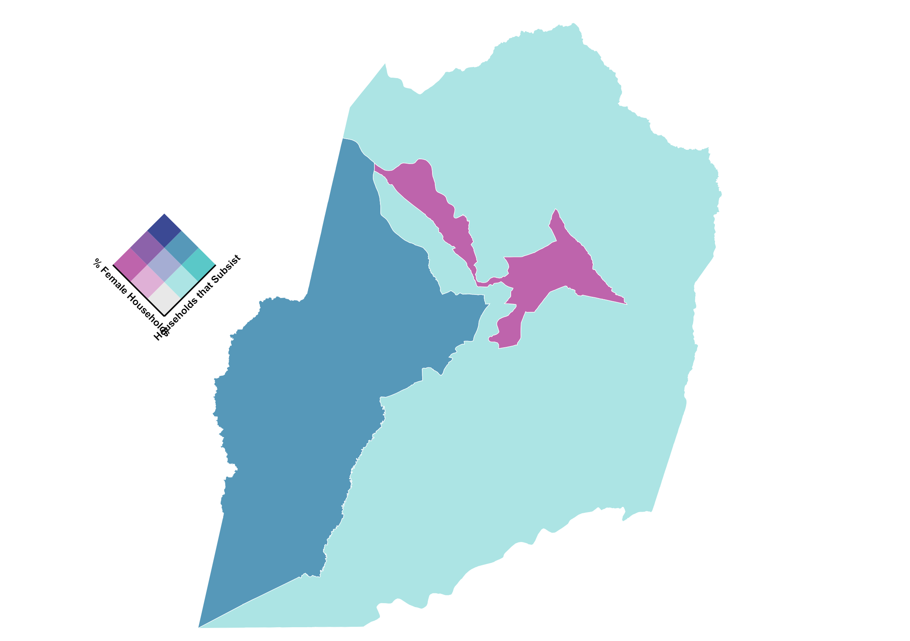

Ugandan Women and Agriculture: A Visual Demographic Representation
This map visualizes the study area and population for the thesis titled: ‘Unpacking Rural Women Farmers' Knowledge of Indigenous Wild and Leafy Green Vegetables in Western Uganda from a Decolonial Perspective’. The study will be conducted in Kasese District, Uganda. Through this study, the researcher will explore, how food knowledge is produced and passed on/ preserved by rural women subsistence farmers. This project visualizes the study demographics and exploring potential relationships between the various visualized attributes. small>
Ugandan Female and Rural Residents
This bivariate map visualizes the percentage of Female and Rural Residents in each Ugandan district.
Female Population Percentage - Uganda
This choropleth map visualizes the percentage of the female population per district in Uganda 2019.

Animated Map of Ugandan Rural Population
The map will animate automatically to show the rate of rural population by disctrict from 2015 to 2019.

Female Households and Subsistence Reliance, Kasese District
This map visualizes the female led households and households that rely on subsistence agriculture in the three subcounties of Kasese distric in Uganda to assess if there is a relationship between the two attributes.
Male Households and Subsistence Reliance, Kasese District
This map visualizes the male led households and households that rely on subsistence agriculture in the three subcounties of Kasese distric in Uganda to assess if there is a relationship between the two attributes.